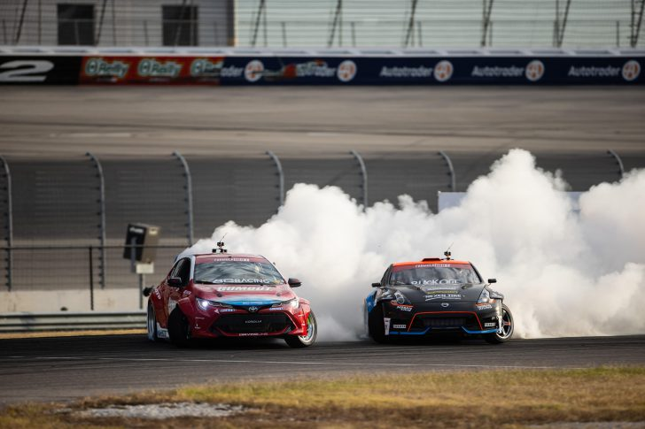

1 - Saito Daigo

Uma lenda de trituração de pneus, Daigo Saito, de 37 anos, é a personificação do drifiting. O piloto japonês, proveniente de Saitama, nos arredores de Tóquio, é uma potência a ser contada quando estiver no comando das máquinas de corrida de quatro rodas. Não só ele levou para casa o título da lendária série japonesa D1GP (2008), mas também ganhou a série Formula Drift (2012), com sede nos EUA, tornando-se o único motorista do mundo a ganhar os dois títulos principais e profissionais do drifting. Atualmente, Daigo compete em D1GP e Formula Drift, além de executar sua própria oficina de corrida - mais conhecida como Fat Five Racing, onde ele constrói sua própria maquinaria de corrida personalizada, convertendo máquinas como Ferrari, corvetes e até lamborghini como a baixo.
Veja no video a baixo

2 - james deane

Deane começou sua carreira em competição à deriva em 2006, pilotando um Ford Sierra no Prodrift Junior Championship, terminando em terceiro na série. Em 2007, Deane venceu seu primeiro evento profissional na série Prodrift principal em Rosegreen aos quinze anos, o que se acredita ter feito dele o mais jovem vencedor de evento profissional de drift no mundo na época. Na temporada seguinte, ele venceu a série irlandesa e a série europeia Prodrift, qualificando-o para competir no Red Bull Drifting World Championship em Long Beach , Califórnia . Deane venceu a série Prodrift 2010 enquanto também competia em alguns eventos de Fórmula D. Na temporada seguinte, ele venceu a série Drift Allstars para a equipe Low Brain Drifters, com seis pódios, incluindo quatro vitórias. Ele ganhou o Campeonato Irlandês de Drift em 2013 e 2015 e, de 2014 em diante, ganhou o Drift Allstars European Series por três anos consecutivos. Em outubro de 2016, após seu terceiro título DA, foi anunciado que Deane retornaria à Fórmula D para uma campanha completa em 2017. Deane pilotaria um Toyota 2JZ com motor Nissan Silvia S15 para a equipe de drift Worthouse ao lado do companheiro de equipe Piotr Wiecek. Wiecek pilotaria um S15 idêntico convertido para direção à esquerda. Seu retorno às competições nos Estados Unidos foi um grande sucesso, com ele vencendo o Formula Drift Championship 2017
Nissan Silvia S-15

James voltou ao Formula Drift em 2018 ao lado de Worthouse. Terminou a temporada em 1º lugar, defendendo com sucesso o título. Isso o tornaria o segundo piloto na história da Fórmula Drift a ganhar campeonatos consecutivos, sendo o primeiro Tanner "The Golden Child" Foust. Deane ficou em primeiro lugar no pódio no 2019 Oman Oil Marketing International Drift Championship. Representando Worthouse e Falken, Deane dominou o suporte, apesar de um problema que estava tendo devido a uma falha com a cremalheira e o pinhão em seu conjunto de direção. Esta vitória no Oman Drift Championship dá a Deane sua décima terceira vitória. Tendo defendido com sucesso seu título de Formula Drift Championship, James Deane voltou para a temporada de 2019, que provou ser a temporada de Fórmula D mais difícil de Deane desde seu retorno à série em 2017. Em 19 de outubro de 2019 Deane foi coroado Campeão de Formula Drift de 2019 pela 3º ano consecutivo, tornando-o o primeiro piloto na história do esporte a fazer uma 3-turfa. Deane está empatado com Chris Forsberg na maioria dos títulos de campeonatos de Fórmula Drift; no entanto, os campeonatos de Forsberg foram não consecutivos, o que deu motivo para muitos saudarem James "The Machine" Deane como o melhor drifter do planeta.
Para min ele é o melhor piloto de todos, e como gosto tanto dele vou colocar a foto de todos os carros dele, porque sou fan mesmo XD
Nissan Silvia S-14

Mazda RX-7

Bmw Eurofighter

3 - Fredric Aasbø
Fredric Aasbø (nascido em 18 de agosto de 1985) é um drifter profissional e motorista de acrobacias originalmente de Ski , Noruega . Ele agora compete no Campeonato de Fórmula Drift. Em 2015, ele se tornou o campeão mundial de Formula Drift. Ele também possui o maior número de vitórias de qualquer piloto na história da série (em abril de 2019). Ele foi vice-campeão nas perseguições do campeonato de 2016, 2017 e 2018. Aasbø ganhou os títulos do Nordic Drifting Championship de 2007 e 2008 como um piloto privado competindo em sua Escandinávia natal antes de fazer sua estréia nos EUA em um convite global de drifting em 2008. Em 2010, ele correu sua primeira temporada completa de competições nos EUA e venceu a Fórmula Prêmio Drift de 'Rookie of the Year'. Em 2014, ele ganhou o título de Formula Drift Asia, e terminou como vice-campeão no US Formula Drift Pro Championship. Ele conquistou o título do Formula Drift Pro Championship em 2015 com um recorde de quatro vitórias em sete rodadas, assim como o Formula Drift World Championship.No mesmo ano, ele também foi premiado como Piloto do Ano da FIA pela Noruega - uma honra que recebeu do Campeão Mundial de Rally da NoruegaPetter Solberg . Depois de iniciar sua carreira como piloto privado em um Toyota Supra, ele se juntou à equipe Papadakis Racing em 2010 como substituto do piloto Tanner Foust (que havia anunciado sua saída do drifting). Em 2012, ele ganhou a categoria "Pro" da Toyota Pro / Celebrity Race . Nos últimos dois anos, ele estreou dois hatchbacks Toyota diferentes na série Formula Drift. Em 2018, a Papadakis Racing lançou o Rockstar Energy Drink / Nexen Tyre Toyota Corolla Hatchback. Um ano antes, eles terminaram em segundo lugar no campeonato em um Toyota IM com pintura semelhante. De 2010 a 2016, ele dirigiu um Scion tC nos Estados Unidos e, atualmente, corre um Toyota GT86 na Europa e com o novo supra A90 na formula drift nos EUA.
Toyota Supra A90
Toyota GT-86
4 - Ryan Tuerck
Desde que ele se lembra, Ryan amava esportes radicais e desde muito jovem se interessou por BMX e Motocross. Aos nove anos, seu pai comprou para ele sua primeira moto de terra
e aos dez anos ele começou a correr motocross. Conforme ele progrediu na classificação do motocross amador, ele teve inúmeros pódios. O ponto alto da carreira amadora de Tuerck
foi a 7ª colocação no país, no Lorreta Lynn's Amateur Nationals. Aos 16 anos, ele recebeu sua licença profissional da American Motocross Association (AMA), e aos 17, Ryan ganhou
a oportunidade de viajar para o Canadá, para competir no Campeonato Canadense profissional. Alguns dos destaques de sua carreira profissional incluíram o 5º lugar no Campeonato
Canadense de 125cc, bem como a qualificação para Budds Creek, e Unadilla no AMA Motocross Nationals.
Ryan estava ganhando muito interesse por carros desde que fez 16 anos. Quando parou de correr, comprou seu primeiro carro, um Ford Mustang 1990. À noite, sentindo a necessidade
de se desafiar, ele puxava o carro de lado para fora das placas de pare e deslizava em estacionamentos vazios perto de sua casa. Depois de ter o Mustang por um ano, Ryan
descobriu na internet que deslizar o carro ou “Drifting” era na verdade um esporte de verdade. Ryan imediatamente vendeu seu Mustang para comprar um isqueiro e um Nissan
240sx melhor. Ele atualizou a suspensão e comprou um LSD de 2 vias para o carro para ajudá-lo a deslizar. Em 2003, Ryan foi ao seu primeiro evento formal no Raceway Park
em Englishtown, NJ, onde conheceu os futuros companheiros de equipe da “Drift Alliance” Tony Angelo , Chris Forsberg e Vaughn Gittin Jr. Ryan se saiu muito bem ao vencer
a competição. Ryan continuou a se dar muito bem em todos os lugares que ia e gastava constantemente todo o seu dinheiro para modernizar seu carro.
Antes de ingressar na Fórmula D, ele completou com sucesso o Campeonato Canadense Drift Mania. Em 2005, Ryan competiu em duas rodadas ou Formula Drift, onde se saiu bem o
suficiente para ser notado por alguns patrocinadores. Em 2006, Ryan competiu em toda a série Formula Drift com a ajuda de seus irmãos Drift Alliance, Cooper Tyres, Discount Tire
e 240sxMotoring. Ryan teve um desempenho excepcional em sua temporada de estreia, terminando em 6º lugar na rodada de Sonoma. Em 2007, Ryan se mudou para a Califórnia com seu
companheiro de equipe da Drift Alliance, Tony Angelo, e começaram o “Team Snakebite” juntos e correram toda a temporada de Formula Drift independentemente com a ajuda de
patrocinadores, o que resultou em Ryan terminando a temporada em 15º em pontos. Em 2008, Ryan foi pego pela Gardella Racinge dirigiu um Pontiac Solstice GXP 2007 patrocinado
pela Gardella Racing, Mobil 1, GM Racing e Maxxis Tires. Seguindo em 2009, Ryan ganhou o primeiro lugar no pódio na Rodada 1 em Long Beach e novamente no final do ano em Irwindale
e em 2010 ficou em terceiro na série de pontos. Em 2011, Gardella aposentou o Solstice de Ryan, escolheu a Red Bull como patrocinador principal e dirigiu o 2011 Mobil 1 /
Red Bull Chevrolet Camaro, no qual terminou em 15º naquele ano. A temporada de 2012 começou com uma troca de patrocínios, Ryan deixou a Gardella Racing por motivos pessoais
e foi contratado pela Retaks antes do primeiro evento em Long Beach. Ele terminou a temporada em quinto lugar depois de um terceiro lugar em Irwindale.
Ryan também faz parte de um grupo de derivação de mísseis (junto com muitos de seus irmãos da aliança drift) baseado em Englishtown, NJ, chamado "Blood Masters".
Para a temporada 2020 do Formula Drift, Ryan Tuerck está em um Toyota Corolla Hatchback construído pela Papadakis Racing . Ele é patrocinado por Gumout , Nitto Tire , Mobil 1 ,
Rotiform , Rockstar Energy , BC Racing e Toyota Racing.

Uma coisa que ele fez que me marcou muito, foi montar um GT-86 da toyota, com um motor v8 da Ferrari,ficou lindo e maravilhoso. Só que ele bateu ela no primeiro video de apresentação.
Veja no video a baixo:
5 - Gustavo Marquardt

Atualmente Gustavo Siqueira Marquardt, com 18 anos de idade não possue mais seu skyline R34, com motor RB26 pois precisou emprestrar para o Brian participar do filme dos velozes e furiosos, sua maior conquista no drift foi alcançar nivel 120 no forza horizon 4 e possuir todos os carros, sem exeção voltados para o drift.
Ele tirou sua carteira recentemente, e anda por machado em "seu" Chevrolet celta 2008, tivemos uma entrevista com ele, e nos foi informado que esta a procura de uma Bmw e36 coupe, porem, não tem dinheiro mesmo para comprar. Ele é uma das maiores promessar do drift Brasileiro, isso quando tiver um carro kkkkkkk.